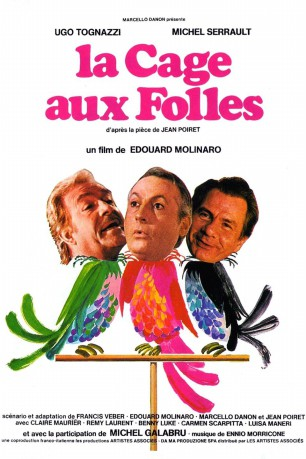
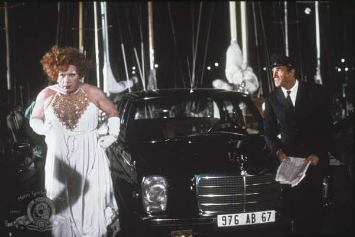

#9032 Ein Käfig voller Narren
Alternativ: La Cage aux Folles (Englischer Titel)
Auszeichnungen: für 3 Oscars nominiert 5 GoldenGlobes gewonnen
 
 IMDB-Wertung: 7.3 / 10
IMDB-Wertung: 7.3 / 10  Metascore: 0
Metascore: 0 
Two gay men living in St. Tropez have their lives turned upside down when the son of one of the men announces he is getting married. They try to conceal their lifestyle and their ownership of the drag club downstairs when the fiancée and her parents come for dinner.
Jahr: 1978
Dauer: 96 Minuten
FSK: 12
Land: Frankreich Studio: MGM Home EntertainmentTonspuren:
Untertitel:
Auflösung: 1080p (1792x1080) Größe: 10752 MB
Genre: Komödie
Regisseur: Édouard Molinaro
Drehbuch: Jean Poiret
Soundtrack: Ennio Morricone
Darsteller:
- Ugo Tognazzi als Renato Baldi
 Michel Serrault als Albin Mougeotte dit Zaza Napoli
Michel Serrault als Albin Mougeotte dit Zaza Napoli- Benny Luke als Jacob
 Michel Galabru als Simon Charrier
Michel Galabru als Simon Charrier-  Venantino Venantini als Le chauffeur de Charrier
- Pierre Mondy als Renato Baldi
- Claire Maurier als Simone Deblon
- Rémi Laurent als Laurent Baldi
- Carmen Scarpitta als Louise Charrier
- Luisa Maneri als Andréa Charrier
- Carlo Reali als Le videur
- Guido Cerniglia als Le médecin
- Angelo Pellegrino als Un assistant de la boîte de nuit
- Nicola D'Eramo als
- Vinicio Diamanti als
- Liana Del Balzo als Mme Charrier
- Piero Mazzinghi als A journalist
- Walter Lucchini als
- Bruno Squeglia als
- Margherita Horowitz als La secrétaire de Madame Deblon
- Antonio Maimone als
- Antonio Maronese als
- Edmondo Tieghi als
- Peter Boom als Un serveur au restaurant
- Cesare Nizzica als
- Giancarlo Pellegrini als Un assistant de la boîte de nuit
- Mariano Brancaccio als
- Renato De Montis als
- Vittorio Podini als
- Giuseppe Di Bella als
- Paolo Di Bella als
- Alberto Ambrosio als
- Rolando Quaranta als
- Jacques Balutin als
- Jacques Ferrière als
- Martine Messager als
- Maxime Cambe als Un danseur de la boîte de nuit (uncredited)
- Mimmo Poli als Le barman (uncredited)
Datei: X:\2-Dilogie(G-M)\Käfig voller Narren\Käfig voller Narren, Ein (1978, FSK12, 1792x1080).mkv seit 08.06.2018
Festplatte: HD Collection-2(A-Z)-3(A-M)
 Alle Filme aus Gruppe '2-Dilogie(G-M)\Käfig voller Narren'
Alle Filme aus Gruppe '2-Dilogie(G-M)\Käfig voller Narren'